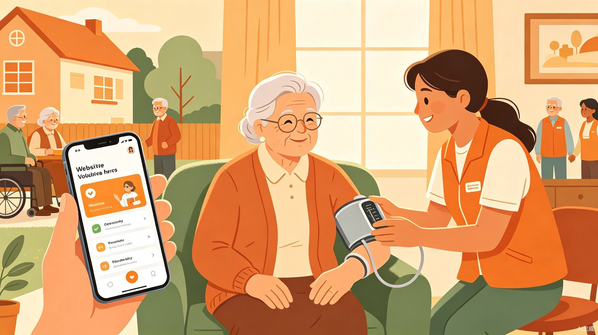

连接老人与社区的互助养老服务平台——让每一位长者都能在家门口，用一句话获得温暖而安心的照护。

"桑梓"出自《诗经·小雅·小弁》"维桑与梓，必恭敬止"，代指故乡家园；"同袍"出自《诗经·秦风·无衣》"岂曰无衣，与子同袍"，意为战友间互助共济。两词皆出诗经，寓意邻里如袍泽，互助护桑梓——社区成员同心协力，守护家园中的每一位老人。
我国 60 岁以上老年人口已突破 3.1 亿，九成以上老人希望居家养老[1]。然而独居老人突发身体不适时无人响应、日常量血压/买药等小事求助无门、子女远在他乡鞭长莫及——传统养老模式在即时性、便利性、可负担性上存在巨大缺口。桑梓同袍要解决的，就是让老人用一句话（文字或语音）就能获得社区内可信赖的即时帮助。
灵感来源于真实生活：许多老人不会用复杂的家政 App，遇到紧急情况时打电话找不到人，而社区里其实有大量刚退休、身体硬朗的"低龄老人"和热心志愿者，他们的时间和能力被闲置了。一边是需求无法表达，一边是供给无处对接——中间缺的不是人，而是一个安全、可信、低门槛的连接平台。加之国家对互助养老的政策推动[2]，让这个想法具备了落地土壤。
一款基于微信小程序 + 社区后台管理平台的互助养老服务系统：老人通过微信小程序（无需下载安装）即可使用，极简界面支持语音/文字一键发布服务请求（按摩、量血压、买药、紧急求助等）；服务者同样通过小程序接单响应；社区后台管理平台供社区工作者、律师、公安进行三方监督，保障每一次互助安全可信。选择微信小程序方案，一方面大幅降低开发难度（一套代码两端运行），另一方面老人无需额外下载 App，在微信内即可使用，天然降低使用门槛。
桑梓同袍 = 老人的"语音求助按钮" + 社区志愿者的"接单大厅" + 三方监督的安全网，让互助养老真正跑通。
平台连接三类核心角色，各自有明确的诉求与困境。
子女在外地工作，平时一个人住。高血压需要定期量血压，腿脚不便下楼买药困难。手机只会打电话和发微信语音，复杂的 App 操作不来。最怕的是晚上突然不舒服，不知道该找谁。不过微信每天都在用，如果能在微信里直接求助就好了。
刚退休两年，身体硬朗，会量血压、懂些按摩手法。退休后时间充裕，想做一些有意义的事，也希望能适当增加收入。但不知道哪里有需要帮助的人，也担心万一服务出了问题说不清。
负责社区养老服务管理，辖区内独居老人多，走访压力大。担心志愿者服务质量参差不齐，害怕出现欺诈老人或服务纠纷，缺乏有效的过程监管工具，出了问题往往事后才知晓。
现有家政/就医类 App 操作复杂，老人不会用、不敢用，文字输入困难，且需要额外下载安装。真正需要时反而求助无门。微信小程序"用完即走"的特性，恰好能消除这道障碍。
社区养老服务中心人手有限，非工作时段无人响应；商业家政平台预约周期长、收费高，无法应对即时需求。
陌生人上门存在安全隐患，老人缺乏辨别能力；服务过程无记录、无监督，一旦发生纠纷或欺诈难以追责。
围绕"发布—接单—服务—监督—评价"闭环，构建三端协同的互助养老平台。
老人只需按住说话或输入文字，AI 自动识别需求类型（买药/量血压/按摩/紧急），生成标准化服务工单。语音转文字确保老人无需打字。
大号 SOS 按钮，长按 3 秒触发紧急模式：自动拨打社区值班电话、通知紧急联系人、同步推送至社工端，并启动定位共享。
注册时选择所属社区组织，系统根据地理位置自动匹配最近的可信服务者，确保互助在熟人社区内闭环。
大字体、高对比度界面，实时显示"已接单—服务中—已完成"状态，全程语音播报，老人无需复杂操作即可掌握进度。
基于服务者位置、技能标签和历史评分，智能推送匹配的求助工单。支持按距离、类型筛选，一键接单。
到达签到、服务拍照、完成确认，全程留痕。服务时长自动统计，作为志愿时长或报酬结算依据。
每次服务后获得老人评价与社区认证积分，累积志愿时长可兑换社区福利。低龄老人可选择有偿服务模式获得报酬。
量血压、按摩等服务需通过线上培训考核后解锁接单权限，确保服务者具备基本技能，降低安全风险。
实时查看辖区内工单动态，对异常订单（超时未完成、差评、紧急求助）主动介入跟进，定期走访独居老人。
为服务纠纷提供在线调解通道，审核服务协议与免责条款，保障老人与服务者双方权益，防范法律风险。
紧急求助自动同步辖区派出所，对涉嫌欺诈、入室盗窃等违法行为快速响应，对服务者进行背景核验。
从老人发出求助到服务完成评价，全流程留痕、三方可见。
flowchart LR
A["老人语音/文字
发布求助"] --> B["AI 识别需求
生成工单"]
B --> C{"需求类型判断"}
C -->|日常服务| D["推送至
社区服务者大厅"]
C -->|紧急求助| E["🔴 触发紧急模式
通知社工+紧急联系人+公安"]
D --> F["服务者
智能匹配接单"]
F --> G["到达签到
服务拍照留痕"]
G --> H["服务完成
老人确认"]
H --> I["双向评价
信用积分更新"]
E --> J["社工实时介入
定位共享"]
J --> K["紧急处置
事后跟进"]
I --> L["监督方
全程可查"]
K --> L
日常服务走"发布→接单→服务→评价"的标准闭环，紧急求助走"触发→联动→处置→跟进"的快速通道。两条路径均对监督方全程透明，确保任何一次服务都有迹可循、有人负责。
互助养老最大的障碍是信任。桑梓同袍构建"准入—过程—事后"三道防线，让每一次互助都安全可信。
flowchart TB
subgraph 准入防线
A1["实名认证
身份核验"] --> A2["技能培训
考核解锁"] --> A3["背景筛查
公安数据比对"]
end
subgraph 过程防线
B1["服务全程
拍照留痕"] --> B2["定位签到
轨迹可查"] --> B3["社工巡检
异常预警"]
end
subgraph 事后防线
C1["双向评价
信用累积"] --> C2["纠纷调解
律师介入"] --> C3["违规黑名单
公安联动"]
end
A3 --> B1
B3 --> C1
| 风险场景 | 防范措施 | 监督角色 |
|---|---|---|
| 恶意抢单不服务 | 接单后 15 分钟未签到自动释放工单并扣信用分；累计 3 次暂停接单权限 | 系统自动 + 社工审核 |
| 虚报服务骗取报酬 | 服务需老人确认 + 现场拍照 + 定位签到三重验证，异常订单自动标记 | 社工抽查 + 系统风控 |
| 服务中欺诈老人 | 老人端一键举报，冻结服务者账户；社工 24 小时内介入核实 | 社工 + 律师 + 公安 |
| 入室盗窃/人身侵害 | 背景核验准入 + 紧急求助一键报警 + 公安数据联动，高风险人员拒入 | 公安 + 社工 |
| 服务质量低劣 | 评价低于阈值自动触发培训复考；连续差评暂停接单 | 社工 + 信用体系 |
监督不是为了限制，而是为了让好人敢帮、让老人敢用。当每一次互助都有记录、有评价、有保障，信任就会像飞轮一样越转越快，互助养老才能真正可持续。
四个差异化设计，让桑梓同袍区别于现有家政平台和社区呼叫系统。
不要求老人学会复杂的文字输入和界面操作。AI 语音识别 + 自然语言理解，老人"说一句话"即可完成需求发布，将数字鸿沟降到最低。
激活 60-70 岁健康低龄老人的闲置时间与技能，让他们成为服务供给主力。既解决照护人力短缺，又让低龄老人获得价值感和适度收入，实现养老资源的内部循环。
首次将社区工作者、律师、公安纳入互助养老平台作为监督角色，用制度+技术双重保障消除老人和家属的安全顾虑，这是纯商业平台做不到的。
以社区组织为单位注册运营，服务者和求助者同属一个社区圈层，在熟人社会中建立信任，降低陌生人上门的心理壁垒。
从社会价值、效率提升与商业可持续性三个维度，阐释桑梓同袍的意义。
桑梓同袍直接回应国家"积极应对人口老龄化"战略[2]。它让独居老人不再"求助无门"，让低龄老人"老有所为"，让社区从被动管理变为主动关怀。每一笔互助都是一次社会温度的传递，缓解了家庭照护压力，也减轻了公共养老资源的负担。
老人发布求助到志愿者接单的平均响应时间（目标值）
老人完成求助所需的全部操作，语音即可
服务全程留痕可追溯，监督方实时可查
借助 TRAE Work 与 TRAE IDE，以微信小程序为载体，将创意快速落地为可运行的 Demo。
用 TRAE Work 快速梳理产品需求文档、用户流程图和界面原型。通过自然语言对话生成小程序端（老人端/服务者端）和社区后台管理端的页面结构与交互逻辑，无需手写设计稿。
在 TRAE IDE 中用 AI 辅助编码，基于微信小程序框架（WXML + WXSS + JavaScript）快速搭建前端。语音识别调用微信自带语音输入 API 或云端 ASR，工单匹配用简单算法，定位签到集成微信地图组件，人机协作大幅缩短开发周期。一套代码即可在 iOS 和 Android 双端运行。
| 模块 | 技术方案 | TRAE 辅助点 |
|---|---|---|
| 语音转文字 | 微信自带语音输入 API + 云端 ASR 兜底 | AI 生成接口调用与异常处理代码 |
| 需求意图识别 | NLP 分类模型 / 规则匹配 | 对话式生成分类逻辑与测试用例 |
| 工单智能匹配 | 距离 + 技能 + 评分加权算法 | AI 辅助编写匹配算法与优化 |
| 定位与签到 | 微信小程序地图组件 + 地理围栏 | 快速集成组件与签到逻辑 |
| 监督看板 | Web 后台管理端 + 实时数据推送 + 异常预警 | AI 生成可视化看板前端组件 |
| 消息通知 | 微信订阅消息 + 模板消息推送 | AI 生成消息模板与触发逻辑 |
从社区试点到城市网络，桑梓同袍的演进路线。
在 3-5 个社区落地试点，验证互助匹配效率与监督机制有效性，积累种子用户与口碑。
接入街道级养老服务中心，打通政府补贴通道，扩展服务品类至陪诊、康复指导、心理陪伴等。
构建城市级互助养老数据平台，AI 预测需求热区辅助资源调配，探索与医保、长护险的数据互通。
让科技不是冰冷的工具，而是邻里间传递温暖的桥梁。每一位老人都能在家门口，被看见、被回应、被守护。这就是桑梓同袍想创造的未来。